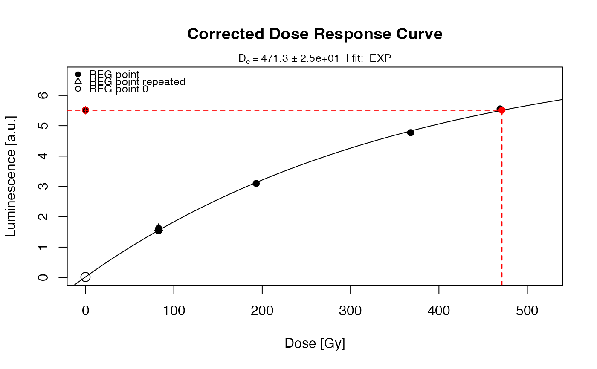

This function applies the fading correction for the prediction of long-term fading as suggested by Lamothe et al., 2003. The function basically adjusts the $L_n/T_n$ values and fit a new dose-response curve using the function plot_GrowthCurve.
calc_Lamothe2003(
object,
dose_rate.envir,
dose_rate.source,
g_value,
tc = NULL,
tc.g_value = tc,
verbose = TRUE,
plot = TRUE,
...
)RLum.Results data.frame (required): Input data for applying the
fading correction. Allow are (1) data.frame with three columns (dose, LxTx, LxTx error; see details), (2)
RLum.Results object created by the function analyse_SAR.CWOSL or analyse_pIRIRSequence
numeric vector of length 2 (required): Environmental dose rate in mGy/a
numeric vector of length 2 (required): Irradiation source dose rate in Gy/s, which is, according to Lamothe et al. (2003) De/t*.
numeric vector of length 2 (required): g_value in \
the equivalent dose was calculated, i.e. tc is either similar for the g-value measurement and the De measurement or
needs be to recalculated (cf. calc_FadingCorr). Inserting a normalised g-value, e.g., normalised to 2-days , will
lead to wrong results
numeric (optional): time in seconds between the end of the irradiation and
the prompt measurement used in the equivalent dose estimation (cf. Huntley & Lamothe 2001).
If set to NULL it is assumed that tc is similar for the equivalent dose
estimation and the g-value estimation
numeric (with default): the time in seconds between irradiation and the
prompt measurement estimating the g-value. If the g-value was normalised to, e.g., 2 days,
this time in seconds (i.e., 172800) should be entered here along with the time used for the
equivalent dose estimation. If nothing is provided the time is set to tc, which is the
usual case for g-values obtained using the SAR method and g-values that had been not normalised to 2 days.
Note: If this value is not NULL the functions expects a numeric value for tc.
logical (with default): Enables/disables terminal verbose mode
logical (with default): Enables/disables plot output
further arguments passed to the function plot_GrowthCurve
The function returns are graphical output produced by the function plot_GrowthCurve and an RLum.Results.
-----------------------------------
[ NUMERICAL OUTPUT ]
-----------------------------------
RLum.Results-object
slot:
@data
| Element | Type | Description |
$data | data.frame | the fading corrected values |
$fit | nls | the object returned by the dose response curve fitting |
'slot:
@info
The original function call
Format of object if data.frame
If object is of type data.frame, all input values most be of type numeric.
Dose values are excepted in seconds (s) not Gray (Gy). No NA values are allowed and
the value for the natural dose (first row) should be 0. Example for three dose points,
column names are arbitrary:
object <- data.frame(
dose = c(0,25,50),
LxTx = c(4.2, 2.5, 5.0),
LxTx_error = c(0.2, 0.1, 0.2))Note on the g-value and tc
Users new to R and fading measurements are often confused about what to
enter for tc and why it may differ from tc.g_value. The tc value
is, by convention (Huntley & Lamothe 2001), the time elapsed between the end of the irradiation and the prompt
measurement. Usually there is no reason for having a tc value different for the equivalent dose measurement
and the g-value measurement, except if different equipment was used.
However, if, for instance, the g-value measurement sequence was analysed
with the Analyst (Duller 2015) and the 'Luminescence is used to correct for fading,
there is a high chance that the value returned by the Analyst comes normalised to 2-days;
even the tc values of the measurement were identical.
In such cases, the fading correction cannot be correct until the tc.g_value was manually
set to 2-days (172800 s) because the function will internally recalculate values
to an identical tc value.
0.1.0
Kreutzer, S., Mercier, N., 2023. calc_Lamothe2003(): Apply fading correction after Lamothe et al., 2003. Function version 0.1.0. In: Kreutzer, S., Burow, C., Dietze, M., Fuchs, M.C., Schmidt, C., Fischer, M., Friedrich, J., Mercier, N., Philippe, A., Riedesel, S., Autzen, M., Mittelstrass, D., Gray, H.J., Galharret, J., 2023. Luminescence: Comprehensive Luminescence Dating Data Analysis. R package version 0.9.21. https://CRAN.R-project.org/package=Luminescence
Huntley, D.J., Lamothe, M., 2001. Ubiquity of anomalous fading in K-feldspars and the measurement and correction for it in optical dating. Canadian Journal of Earth Sciences 38, 1093-1106.
Duller, G.A.T., 2015. The Analyst software package for luminescence data: overview and recent improvements. Ancient TL 33, 35–42.
Lamothe, M., Auclair, M., Hamzaoui, C., Huot, S., 2003. Towards a prediction of long-term anomalous fading of feldspar IRSL. Radiation Measurements 37, 493-498.
##load data
##ExampleData.BINfileData contains two BINfileData objects
##CWOSL.SAR.Data and TL.SAR.Data
data(ExampleData.BINfileData, envir = environment())
##transform the values from the first position in a RLum.Analysis object
object <- Risoe.BINfileData2RLum.Analysis(CWOSL.SAR.Data, pos=1)
##perform SAR analysis and set rejection criteria
results <- analyse_SAR.CWOSL(
object = object,
signal.integral.min = 1,
signal.integral.max = 2,
background.integral.min = 900,
background.integral.max = 1000,
verbose = FALSE,
plot = FALSE,
onlyLxTxTable = TRUE
)
##run fading correction
results_corr <- calc_Lamothe2003(
object = results,
dose_rate.envir = c(1.676 , 0.180),
dose_rate.source = c(0.184, 0.003),
g_value = c(2.36, 0.6),
plot = TRUE,
fit.method = "EXP")

#>
#> [calc_Lamothe2003()]
#>
#> Used g_value: 2.36 ± 0.6 %/decade
#>
#> Fading_C: 0.785 ± 0.055
#> Corrected Ln/Tn: 5.513 ± 0.127
#> Corrected De: 471.3 ± 26.04 Gy
#> --------------------------------------------------------
#> Corrected Age: 281.2 ± 33.96 ka
#> --------------------------------------------------------